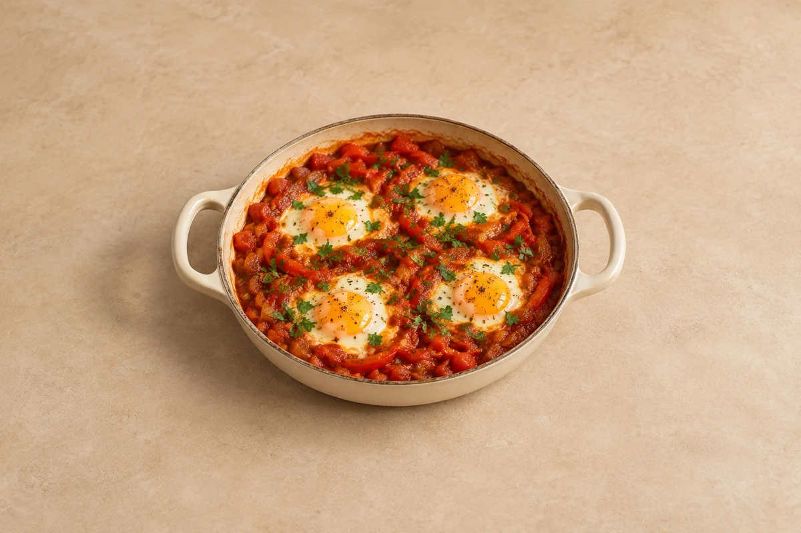

Breakfast & Brunch
Shakshuka
Eggs gently cooked in a spiced tomato and pepper sauce. Serves 2.
Time to allow: 35 min total
Ingredient quantities update automatically

Ingredients
Method
Soften the vegetables
Heat the oil in a wide lidded frying pan over a medium heat. Cook the onion and pepper for 8–10 minutes until softened.Add the spices
Add the garlic, cumin, paprika and chilli flakes. Stir for 1 minute.Simmer the sauce
Add the tomatoes, season and simmer uncovered for 10 minutes until thickened. Add a small splash of water only if the sauce catches.Add the eggs
Make a well in the sauce for each egg. Crack the eggs into the wells.Cook gently
Cover and cook over a low heat for 5–8 minutes, until the whites are fully set and the yolks are cooked to your preference. Use a larger pan or several pans when increasing servings.Finish
Scatter over the parsley and serve immediately.
Tips & leftovers
Storage & leftovers
For making ahead, refrigerate the tomato-pepper sauce without eggs within 2 hours and use within 48 hours. Cook eggs fresh at serving. If storing the finished dish, fully cook the eggs, chill promptly and use within 24 hours for best quality.
Freezing
Freeze the cooled sauce without eggs in labelled portions for up to 2 months for best quality. Defrost in the fridge and add fresh eggs when finishing.
Reheating
Reheat sauce once until steaming hot, then cook fresh eggs in it. The finished eggs become firm and rubbery on reheating, so making only the number needed gives a better result.
Substitutions
Add drained chickpeas to the sauce for extra substance. Use yellow peppers instead of red. Reduce chilli for less heat, and add fresh parsley after cooking.
Keeping leftovers safe
Cool cooked leftovers in small portions and refrigerate within 2 hours. Keep the fridge at 0–5°C and the freezer around −18°C. Freeze suitable leftovers promptly. Defrost fully in the fridge and use within 24 hours. Reheat only once, until steaming hot all the way through. Follow any shorter use-by or opened-pack instructions; using older cooked ingredients does not restart their storage time.
Food-safety guidance: Food Standards Agency: chilling and freezing · reheating leftovers.